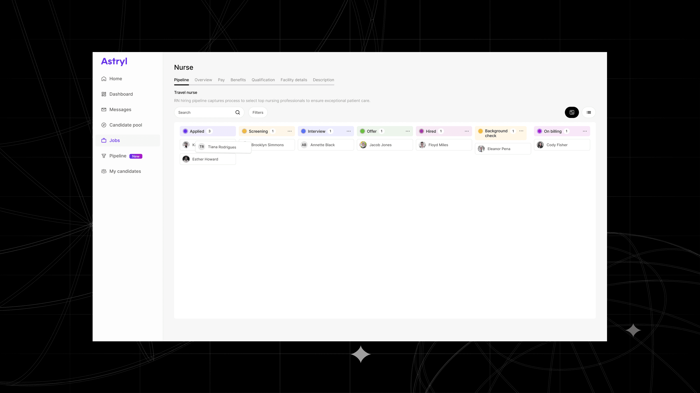
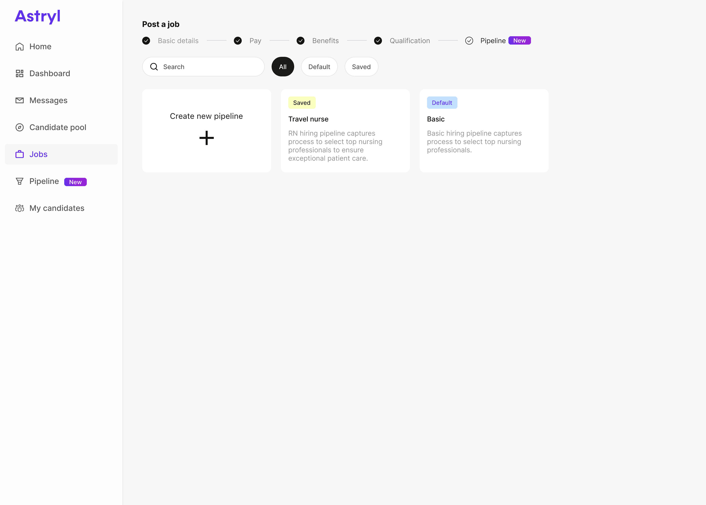
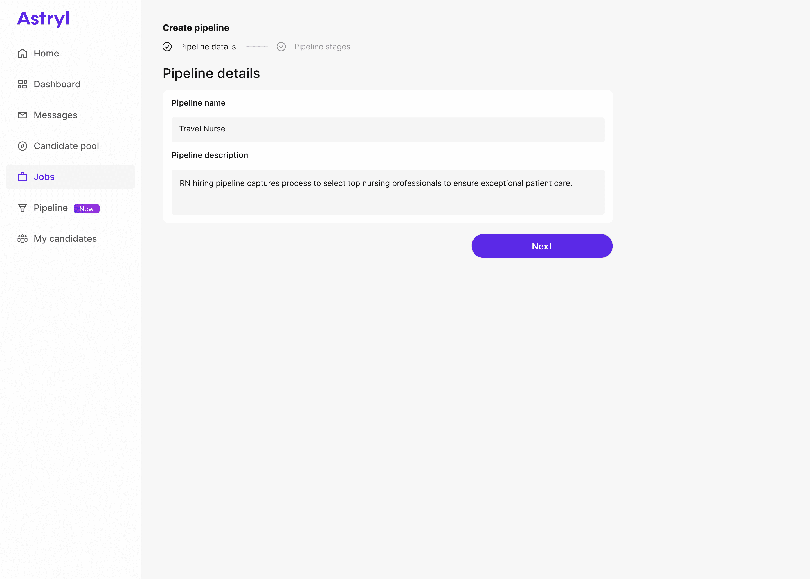
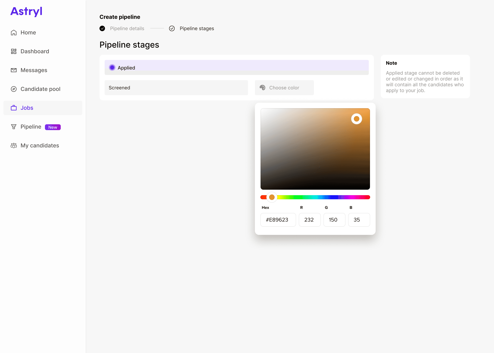
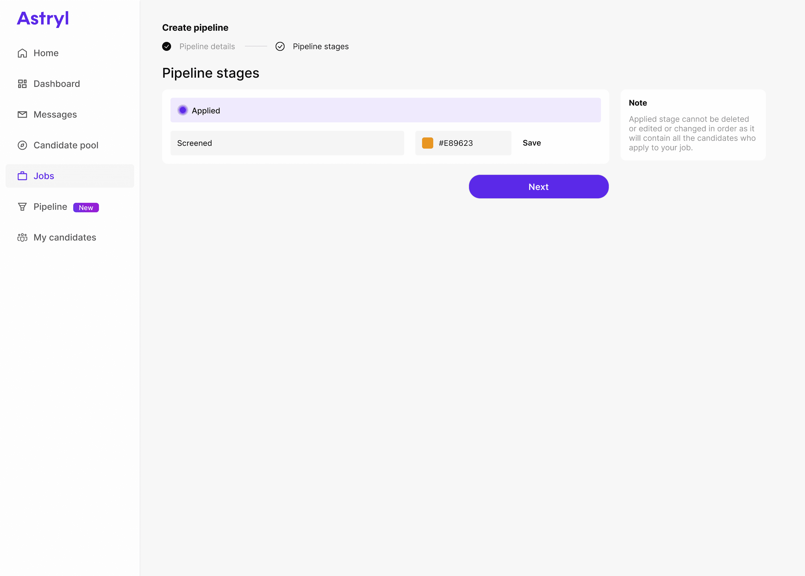
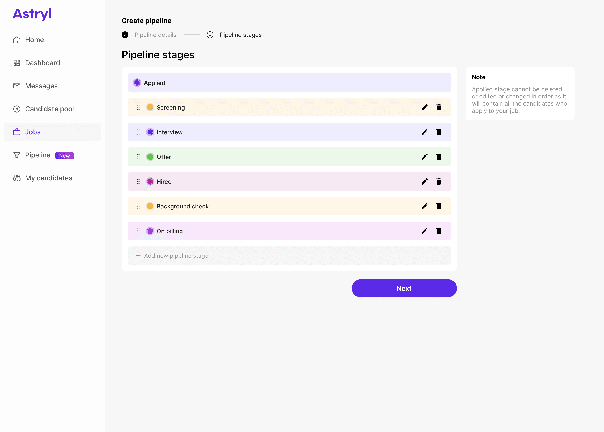
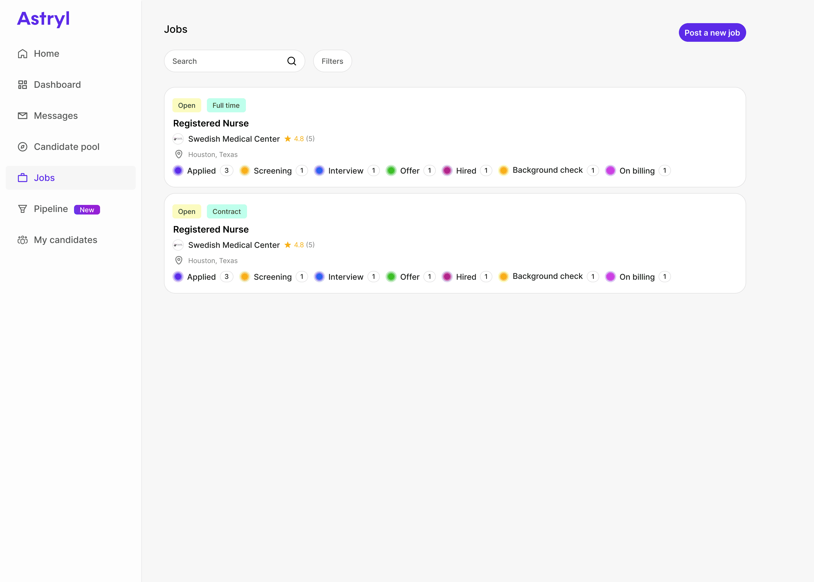
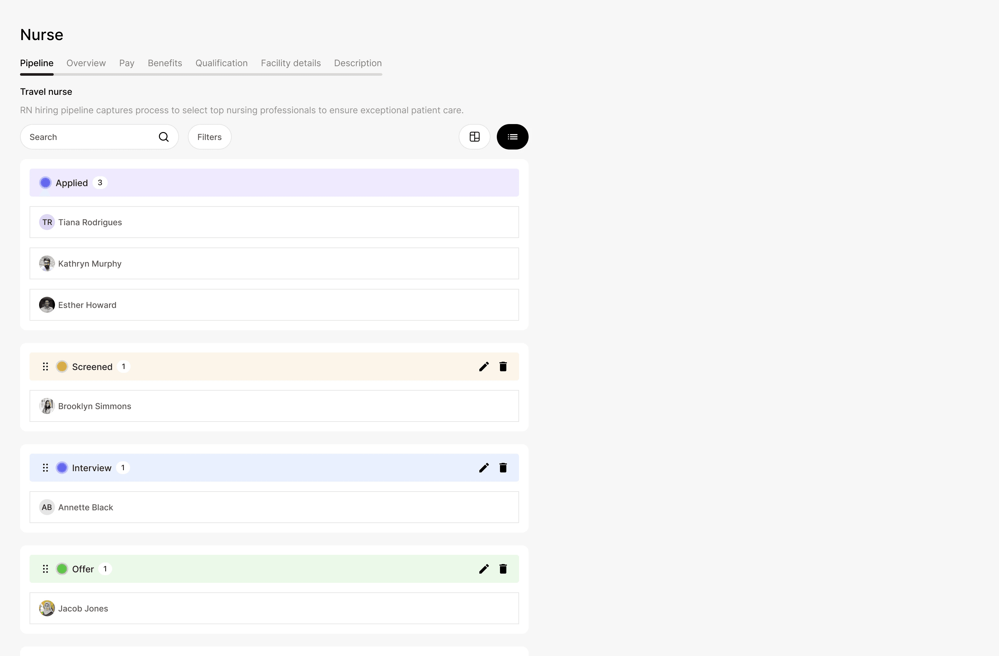
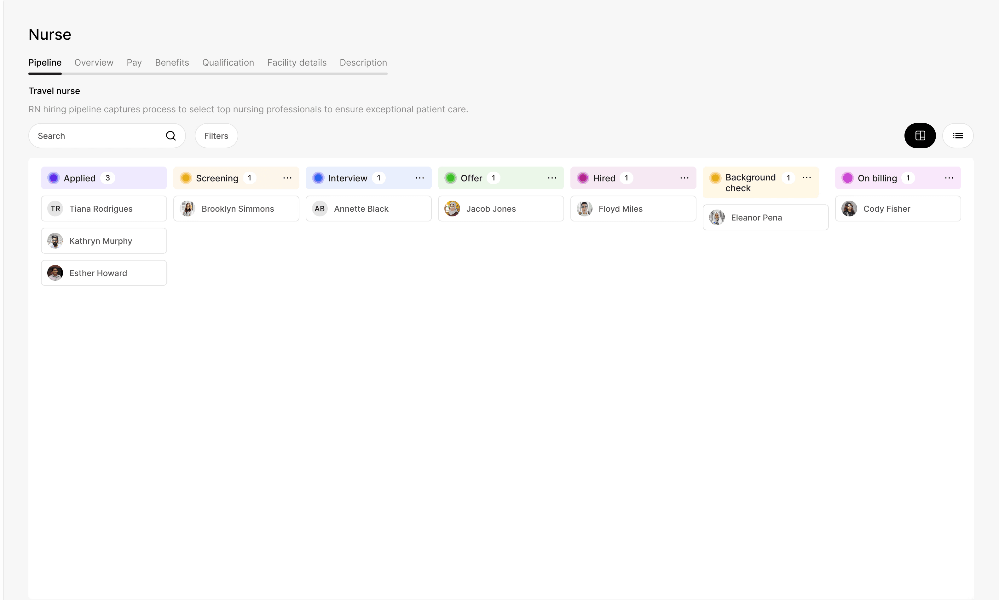

Hiring pipeline
Designing a feature for healthcare recruiters to track their candidates

Note: I have documented, rebranded and improvised this case study to meet the NDA.
Designs
This design helps recruiters create custom pipelines with stages so that the recruiter can track candidates efficiently in the ATS.







